7.1 Structure of ecosystem
7.2 Functions of ecosystem
7.3 Plant succession
Have you seen lakes, ponds and pools in your surroundings QUESTION MARK They are all called water bodies with many components in them. Can you list out the things which are found in water bodies QUESTION MARK Mud, nutrients, clay, dissolved gases, planktons, microorganisms, plants like algae, Hydrilla, Nelumbo, Nymphaea and animals like snake, small fish, large fish, frog, tortoise and crane are the components of the water bodies which constitutes ecosystem. Further, we all know that plants and animals are prominent living components in the environment. They interact with space components such as air, water, soil, sunlight, etc. For example, you have studied in class XI, one of the life processes, photosynthesis which utilizes sunlight , water, carbondioxide, nutrients from the soil and release oxygen to the atmosphere. From this, we understand that the exchange of materials takes place between living and space components. Likewise, you can study the structure, function and types of ecosystem in this chapter. The term ‘ecosystem’ was proposed by A.G. Tansley OPEN BRACKET 1935 CLOSE BRACKET, who defined it as ‘the system resulting from the integration of all the living and nonliving factors of the environment’. Whereas, Odum OPEN BRACKET 1962 CLOSE BRACKET defined ecosystem ‘as the structural and functional unit of ecology’.
Parallel terms for ecosystem coined by various ecologists
Biocoenosis – Karl Mobius
Microcosm – S.A. Forbes
Geobiocoenosis – V. V. Dokuchaev, G.F. Morozov
Holocoen - Friederichs
Biosystem – Thienemann
Bioenert body – Vernadsky
Ecosystem comprises of two major components. They are:
It includes climatic factors OPEN BRACKET air, water, sunlight, rainfall, temperature and humidity CLOSE BRACKET, edaphic factors OPEN BRACKET soil air, soil water and pH of soil CLOSE BRACKET,topography OPEN BRACKET latitude, altitude CLOSE BRACKET, organic components OPEN BRACKET carbohydrates, proteins, lipids and humic substances CLOSE BRACKET and inorganic substances OPEN BRACKET C, H, O, N and P CLOSE BRACKET. Abiotic components play vital role in any ecosystem and hence the total inorganic substances present in any ecosystem at a given time is called standing quality OPEN BRACKET or CLOSE BRACKET standing state.
It includes all living organisms like plants, animals, fungi and bacteria. They form the trophic structures of any ecosystem. On the basis of nutritional relationships, trophic levels of an ecosystem have two components. OPEN BRACKET 1 CLOSE BRACKET autotrophic components and OPEN BRACKET 2 CLOSE BRACKET heterotrophic components.
Autotrophs are organisms which can manufacture the organic compounds from simple inorganic components through a process called photosynthesis. In most of the ecosystems, green plants are the autotrophs and are also called producers.
Those organisms which consume the producers are called consumers and can be recognized into macro and micro consumers. Macroconsumers refer to herbivores, carnivores and omnivores OPEN BRACKET primary, secondary and tertiary consumers CLOSE BRACKET. Microconsumers are called decomposers.
Decomposers are organisms that decompose the dead plants and animals to release organic and inorganic nutrients into the environment which are again reused by plants. Example: Bacteria, Actinomycetes and Fungi.
The amount of living materials present in a population at any given time is known as standing crop, which may be expressed in terms of number or biomass per unit area. Biomass can be measured as fresh weight or dry weight or carbon weight of organisms. Biotic components are essential to construct the food chain, food web and ecological pyramids.
The function of ecosystem include creation of energy creation, sharing of energy and cycling of materials between the living and non-living components of an ecosystem.
Before studying the productivity in any ecosystem, we should understand the essential role of sunlight used by producers of the first trophic level. The quantity of sunlight is directly proportional to the production of energy by plants.
The amount of light available for photosynthesis of plants is called Photosynthetically Active Radiation OPEN BRACKET PAR CLOSE BRACKET which is from of 400-700 nm in wave length. It is essential for photosynthesis and plant growth. PAR is not always constant because of clouds, tree shades, air, dust particles, seasons, latitudes and length of the daylight availability. Generally plants absorb more blue and red light for efficient photosynthesis.
Of the total sunlight, 34 percent that reaches the atmosphere is reflected back into the atmosphere, moreover 10 percentage is held by ozone, water vapours and atmospheric gases and the remaining 56 percentage reaches the earth’s surface. Out of this 56 percentage , only 2 – 10 percentage of the solar energy is used by green plants for photosynthesis while the remaining portion is dissipated as heat.
PAR is generally expressed in millimoles per square meter per second by using silicon photo voltic detectors which detect only 400 to 700 nm wavelength of light. PAR values range from 0 to 3000 millimoles per square meter per second. At night PAR is zero and during midday in the summer, PAR often reaches 2000 to 3000 millimoles per square meter per second.
Green carbon – carbon stored in the biosphere OPEN BRACKET by the process of photosynthesis CLOSE BRACKET.
Grey carbon – carbon stored in fossil fuel OPEN BRACKET coal, oil and biogas deposits in the lithosphere CLOSE BRACKET.
Blue carbon – carbon stored in the atmosphere and oceans.
Brown carbon – carbon stored in industrialized forests OPEN BRACKET wood used in making commercial articles CLOSE BRACKET
Black carbon – carbon emitted from gas, diesel engine and coal fired power plants.
The rate of biomass production per unit area in a unit time is called productivity. It can be expressed in terms of gm per square metre per year or KcalSLASH per square metre per year. It is classified as given bellow.
1. Primary productivity
2. Secondary productivity
3. Community productivity
The chemical energy or organic matter generated by autotrophs during the process of photosynthesis and chemosynthesis is called primary productivity. It is the source of energy for all organisms, from bacteria to human.
The total amount of food energy or organic matter or biomass produced in an ecosystem by
autotrophs through the process of photosynthesis is called gross primary productivity
The proportion of energy which remains after respiration loss in the plant is called net primary productivity. It is also called as apparent photosynthesis. Thus, the difference between GPP and respiration is known as NPP.
NPP IS EQUAL TO GPP – Respiration
NPP of whole biosphere is estimated to be about 170 billion tons OPEN BRACKET dry weight CLOSE BRACKET per year. Out of which NPP of oceanic producers is only 55 billion tons per year in unit time.
The amount of energy stored in the tissues of heterotrophs or consumers is called secondary productivity.
It is equivalent to the total amount of plant material is ingested by the herbivores minus the materials lost as faeces.
Storage of energy or biomass by consumers per unit area per unit time, after respiratory loss is called net secondary productivity.
The rate of net synthesis of organic matter OPEN BRACKET biomass CLOSE BRACKET by a group of plants per unit area per unit time is known as community productivity.
Primary productivity depends upon the plant species of an area, their photosynthetic capacity, availability of nutrients, solar radiation, precipitation, soil type, topographic factors OPEN BRACKET altitude, latitude, direction CLOSE BRACKET, and other environmental factors. It varies in different types of ecosystems.
OPEN BRACKET Greek word ‘ trophic’ IS EQUAL TO to food or feeding CLOSE BRACKET A trophic level refers to the position of an organism in the food chain. The number of trophic levels is equal to the number of steps in the food chain. The green plants OPEN BRACKET producers CLOSE BRACKET occupying the first trophic level OPEN BRACKET T1 CLOSE BRACKET are called producers. The energy produced by the producers is utilized by the plant eaters OPEN BRACKET herbivores CLOSE BRACKET they are called primary consumers and occupy the second trophic level OPEN BRACKET T2 CLOSE BRACKET.
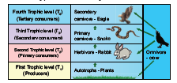
Figure 7.1: Diagrammatic representation of trophic levels
Herbivores are eaten by carnivores, which occupy the third trophic level OPEN BRACKET T3 CLOSE BRACKET. They are also called secondary consumers or primary carnivores. Carnivores are eaten by the other carnivores, which occupy the fourth trophic level OPEN BRACKET T4 CLOSE BRACKET. They are called the tertiary consumers or secondary carnivores. Some organisms which eat both plants and animals are called as omnivores OPEN BRACKET Crow CLOSE BRACKET. Such organisms may occupy more than one trophic level in the food chain.
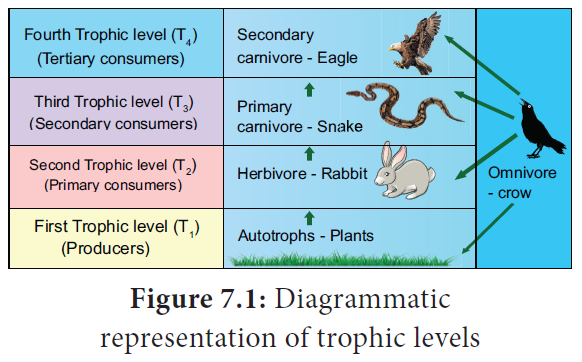
Figure 7.1: Diagrammatic representation of energy flow
The transfer of energy in an ecosystem between trophic levels can be termed as energy flow. It is the key function in an ecosystem. Part of the energy obtained from the sun by producers is transferred to consumers and decomposers through each trophic level, while some amount of energy is dissipated in the form of heat. Energy flow is always unidirectional in an ecosystem.
Laws of thermodynamics
The storage and loss of energy in an ecosystem is based on two basic laws of thermo-dynamics.
1. First law of thermodynamics
It states that energy can be transmitted from one system to another in various forms. Energy cannot be destroyed or created. But it can be transformed from one form to another. As a result, the quantity of energy present in the universe is constant.
Example:
In photosynthesis, the product of starch OPEN BRACKET chemical energy CLOSE BRACKET is formed by the combination of reactants OPEN BRACKET chlorophyll, H2O, CO2 CLOSE BRACKET. The energy stored in starch is acquired from the external sources OPEN BRACKET light energy CLOSE BRACKET and so there is no gain or loss in total energy. Here light energy is converted into chemical energy.
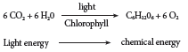
2. Second law of thermodynamics
It states that energy transformation results in the reduction of the free energy of the system. Usually energy transformation cannot be 100 percentage efficient. As energy is transferred from one organism to another in the form of food, a portion of it is stored as energy in living tissue, whereas a large part of energy is dissipated as heat through respiration. The transfer of energy is irreversible natural process. Example: Ten percent law
Ten percent law
This law was proposed by Lindeman OPEN BRACKET 1942 CLOSE BRACKET. It states that during transfer of food energy from one trophic level to other, only about 10 percentage stored at every level and rest of them OPEN BRACKET 90 percentage CLOSE BRACKET is lost in respiration, decomposition and in the form of heat. Hence, the law is called ten percent law.
Example: It is shown that of the 1000 Joules of Solar energy trapped by producers. 100 Joules of energy is stored as chemical energy through photosynthesis. The remaining 900 Joules would be lost in the environment. In the next trophic level herbivores, which feed on producers get only 10 Joules of energy and the remaining 90 Joules is lost in the environment. Likewise, in the next trophic level, carnivores, which eat herbivores store only 1 Joule of energy and the remaining 9 Joules is dissipated. Finally, the carnivores are eaten by tertiary consumers which store only 0.1 Joule of energy and the remaining 0.9 Joule is lost in the environment. Thus, at the successive trophic level, only ten percent energy is stored.
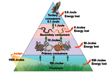
Figure 7.4: Ten percent law
7.2.5 Food chain
The movement of energy from producers upto top carnivores is known as food chain, that is, in any food chain, energy flows from producers to primary consumers, then from primary consumers to secondary consumers, and finally secondary consumers to tertiary consumers. Hence, it shows linear network links. Generally, there are two types of food chain, OPEN BRACKET 1 CLOSE BRACKET Grazing food chain and OPEN BRACKET 2 CLOSE BRACKET Detritus food chain.
1. Grazing food chain
Main source of energy for the grazing food chain is the Sun. It begins with the first link, producers OPEN BRACKET plants CLOSE BRACKET. The second link in the food chain is primary consumers OPEN BRACKET mouse CLOSE BRACKET which get their food from. The third link in the food chain is secondary consumers OPEN BRACKET snake CLOSE BRACKET which get their food from primary consumers. Fourth link in the food chain is tertiary consumers OPEN BRACKET eagle CLOSE BRACKET which get their food from secondary consumers.
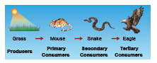
Figure 7.4: Diagrammatic representation of Grazing food chain
2. Detritus food chain:
This type of food chain begins with dead organic matter which is an important source of energy. A large amount of organic matter is derived from the dead plants, animals and their excreta. This type of food chain is present in all ecosystems. The transfer of energy from the dead organic matter, is transferred through a series of organisms
called detritus consumers OPEN BRACKET detritivores CLOSE BRACKET- small carnivores - large OPEN BRACKET top CLOSE BRACKET carnivores with repeated eating and being eaten respectively. This is called the detritus food chain.
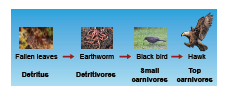
Figure 7.5: Diagrammatic representation of Detritus food chain.
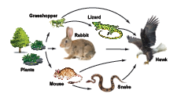
Figure 7.7: Diagrammatic representation of Food web in a grassland ecosystem
The inter-locking pattern of a number of food chain form a web like arrangement called food web. It is the basic unit of an ecosystem, to maintain its stability in nature. Which is also called homeostasis.
Example: In a grazing food chain of a grass land, in the absence of a rabbit, a mouse may also eat food grains. The mouse in turn may be eaten directly by a hawk or by a snake and the snake may be directly eaten by hawks.
Hence, this interlocking pattern of food chains is the food web and the species of an ecosystem may remain balanced to each other by some sort of natural check.
Significance of food web
Food web is constructed to describe species interaction called direct interaction.
It can be used to illustrate indirect interactions among different species.
It can be used to study bottom-up or topdown control of community structure.
It can be used to reveal different patterns of energy transfer in terrestrial and aquatic ecosystems.
Graphic representation of the trophic structure and function at successive trophic levels of an
ecosystem is called ecological pyramids. The concept of ecological pyramids was introduced by Charles Elton OPEN BRACKET 1927 CLOSE BRACKET. Thus they are also called as Eltonian pyramids.
There are three types: OPEN BRACKET 1 CLOSE BRACKET pyramid of number OPEN BRACKET 2 CLOSE BRACKET pyramid of biomass OPEN BRACKET 3 CLOSE BRACKET pyramid of energy.
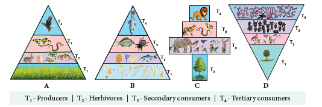
Figure 7.7: Pyramids of numbers OPEN BRACKET individuals per unit area CLOSE BRACKET in different types of ecosystems.
Upright-A CLOSE BRACKET Grassland ecosystem B CLOSE BRACKET Pond ecosystem , Spindle shaped -C CLOSE BRACKET Forest ecosystem,
Inverted-D CLOSE BRACKET Parasite ecosystem
A graphical representation of the number of organisms present at each successive trophic level in an ecosystem is called pyramids of number. There are three different shapes of pyramids upright, spindle and inverted.
There is a gradual decrease in the number of organisms in each trophic level from producers to primary consumers and then to secondary consumers, and finally to tertiary consumers. Therefore, pyramids of number in grassland and pond ecosystem are always upright.
In a forest ecosystem the pyramid of number is somewhat different in shape, it is because the base OPEN BRACKET T1 CLOSE BRACKET of the pyramid occupies large sized trees OPEN BRACKET Producer CLOSE BRACKET which are lesser in number.
Herbivores OPEN BRACKET T2 CLOSE BRACKET OPEN BRACKET Fruit eating birds, elephant, deer CLOSE BRACKET occupying second trophic level, are more in number than the producers. In final trophic level OPEN BRACKET T4 CLOSE BRACKET, tertiary consumers OPEN BRACKET lion CLOSE BRACKET are lesser in number than the secondary consumer OPEN BRACKET T3 CLOSE BRACKET OPEN BRACKET fox and snake CLOSE BRACKET. Therefore, the pyramid of number in forest ecosystem looks spindle shaped. The pyramid of number in a parasite ecosystem is always inverted, because it starts with a single tree. Therefore there is gradual increase in the number of organisms in successive tropic levels from producer to tertiary consumers.
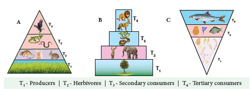
Figure 7.8: Pyramids of biomass OPEN BRACKET dry weight per unit area CLOSE BRACKETin different types of ecosystems.
Upright-A CLOSE BRACKET Grassland ecosystem B CLOSE BRACKET Forest ecosystem, Inverted- C CLOSE BRACKETPond ecosystem
A graphical representation of the amount of organic material OPEN BRACKET biomass CLOSE BRACKET present at each successive trophic level in an ecosystem is called pyramid of biomass.
In grassland and forest ecosystems, there is a gradual decrease in biomass of organisms at successive trophic levels from producers to top carnivores OPEN BRACKET Tertiary consumer CLOSE BRACKET. Therefore, these two ecosystems show pyramids as upright pyramids of biomass.
However, in pond ecosystem, the bottom of the pyramid is occupied by the producers, which comprise very small organisms possessing the least biomass and so, the value gradually increases towards the tip of the pyramid. Therefore, the pyramid of biomass is always inverted in shape.
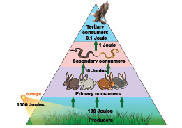
Figure 7.9: Pyramids of energyOPEN BRACKET KcalSLASHunit areaSLASHunit time CLOSE BRACKET in any ecosystem
A graphical representation of energy flow at each successive trophic level in an ecosystem is called pyramid of energy. The bottom of the pyramid of energy is occupied by the producers. There is a gradual decrease in energy transfer at successive tropic levels from producers to the upper levels. Therefore, the pyramid of energy is always upright.
Decomposition is a process in which the detritus OPEN BRACKET dead plants, animals and their excreta CLOSE BRACKET are breaken down in to simple organic matter by the decomposers. It is an essential process for recycling and balancing the nutrient pool in an ecosystem.
The process of decomposition varies based on the nature of the organic compounds, that is, some of the compounds like carbohydrate, fat and protein are decomposed rapidly than the cellulose, lignin, chitin, hair and bone.
Decomposition is a step wise process of degradation mediated by enzymatic reactions. Detritus acts as a raw material for decomposition. It occurs in the following steps.
Raw material for decomposition
senescence
Fragmentation
catabolism
leaching
Humification
mineralisation
Absorption by plants
Figure 7.10 Diagrammatic representation process of decomposition and cycling of nutrients
a. Fragmentation - The breaking down of detritus into smaller particles by detritivores like bacteria, fungi and earth worm is known as fragmentation. These detritivores secrete certain substances to enhance the fragmentation process and increase the surface area of detritus particles.
b. Catabolism - The decomposers produce some extracellular enzymes in their surroundings to break down complex organic and inorganic compounds in to simpler ones. This is called catabolism
c. Leaching or Eluviation - The movement of decomposed, water soluble organic and inorganic compounds from the surface to the lower layer of soil or the carrying away of the same by water is called leaching or eluviation.
d. Humification - It is a process by which simplified detritus is changed into dark coloured amorphous substance called humus. It is highly resistant to microbial action, therefore decomposition is very slow. It is the reservoir of nutrients.
e. Mineralisation - Some microbes are involved in the release of inorganic nutrients from the humus of the soil, such process is called mineralisation.
Factors affecting decomposition
Decomposition is affected by climatic factors like temperature, soil moisture, soil pH, oxygen and also the chemical quality of detritus.
Exchange of nutrients between organisms and their environment is one of the essential aspects of an ecosystem. All organisms require nutrients for their growth, development, maintenance and reproduction. Circulation of nutrients within the ecosystem or biosphere is known as biogeochemical cycles and also called as ‘cycling of materials.’ There are two basic types,
1. Gaseous cycle – It includes atmospheric Oxygen, Carbon and Nitrogen cycles.
2. Sedimentary cycle – It includes the cycles of Phosphorus, Sulphur and Calcium - Which are present as sediments of earth.
Many of the cycles mentioned above are studied by you in previous classes. Therefore, in this chapter, only the carbon and phosphorous cycles are explained.
The circulation of carbon between organisms and environment is known as the carbon cycle. Carbon is an inevitable part of all biomolecules and is substantially impacted by the change in global climate. Cycling of carbon between organisms and atmosphere is a consequence of two reciprocal processes of photosynthesis and respiration. The releasing of carbon in the atmosphere increases due to burning of fossile fuels, deforestration, forest fire, volcanic eruption and decomposition of dead organic matters. The details of carbon cycle are given in the figure.
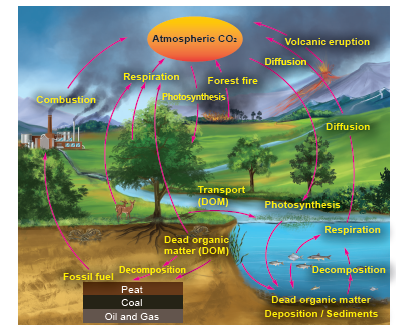
Figure 7.12: Diagrammatic Sketch showing Carbon cycle
It is a type of sedimentary cycle. Already we know that phosphorus is found in the biomolecules like DNA, RNA, ATP, NADP and phospholipid molecules of living organisms. Phosphorus is not abundant in the biosphere, whereas a bulk quantity of phosphorus is present in rock deposits, marine sediments and guano. It is released from these deposits by weathering process. After that, it circulates in lithosphere as well as hydrosphere. The producers absorb phosphorus in the form of phosphate ions, and then it is transferred to each trophic level of food chain through food. Again death of the organisms and degradation by the action of decomposers, the phosphorus is released back into the lithosphere and hydrosphere to maintain phosphorus cycle.
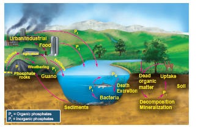
Figure 7.12: Diagrammatic sketch showing Phosphorous cycle
Biosphere consists of different types of ecosystems, which are as follows:
Ecosystem in two types
Natural ecosystem
open bracket with or without human interference close bracket
artificial or manmade ecosystem
open bracket Artifically maintained by man close bracket
example : Rice field and maize field
Terrestrial Ecosystem
Example Forest ecosystem grass land ecosystem desert ecosystem
Aquatic ecosystem open bracket open water close bracket
Fresh water ecosystem
Lotic open bracket Running water bodies close bracket
Example river spring and stream
marine ecosystem
Lentic open bracket standing water bodies close bracket example pond and lake
Figure 7.1: Types of Ecosystem
Though there are many types of ecosystems as charted above. Only the pond ecosystem is detailed below.
It is a classical example for natural, aquatic, freshwater, lentic type of ecosystem. It helps us to understand the structure and function of an ecosystem. When rain water gathers in a shallow area, gradually over a period of time, different kinds of organisms OPEN BRACKET microbes, plants, animals CLOSE BRACKET become part of this ecosystem. This pond ecosystem is a self sustaining and self regulatory fresh water ecosystem, which shows a complex interaction between the abiotic and biotic components in it.
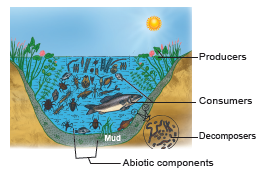
Figure 7.14: Diagram shows structure of pond ecosystem with abiotic and biotic components.
Collect few living and non-living components from any water body found near by.
A pond ecosystem consists of dissolved inorganic OPEN BRACKET CO2, O2, Ca, N, Phosphate CLOSE BRACKET and organic substances OPEN BRACKET amino acids and humic acid CLOSE BRACKET formed from the dead organic matter. The function of pond ecosystem is regulated by few factors like the amount of light, temperature, pH value of water and other climatic conditions.
They constitute the producers, variety of consumers and decomposers OPEN BRACKET microorganisms CLOSE BRACKET.
A variety of phytoplanktons like Oscillatoria, Anabaena, Chlamydomonas, Pandorina, Eudorina, Volvox and Diatoms. Filamentous algae such as Ulothrix, Spirogyra, Cladophora and Oedogonium; floating plants Azolla, Salvia, Pistia, Wolffia and Eichhornia; submerged plants Potamogeton and Phragmitis; rooted floating plants Nymphaea and Nelumbo; macrophytes like Typha and Ipomoea, constitute the major producers of a pond ecosystem.
The animals represent the consumers of a pond ecosystem which include zooplanktons like Paramoecium and Daphnia OPEN BRACKET primary consumers CLOSE BRACKET; benthos OPEN BRACKET bottom living animals CLOSE BRACKET like mollusces and annelids; secondary consumers like water beetles and frogs; and tertiary consumers OPEN BRACKET carnivores CLOSE BRACKET like duck , crane and some top carnivores which include large fish, hawk ,man, etc.
Box item
DO YOU KNOW QUESTION MARK
Sea grasses and mangroves of Estuarine and coastal ecosystems are the most efficient in carbon sequestration. Hence, these ecosystems are called as “ Blue carbon ecosystems”. They are not properly utilized and maintained all over the world although they have rich bioresources potential.
They are also called as microconsumers. They help to recycle the nutrients in the ecosystem. These are present in mud water and bottom of the ponds. Example: Bacteria and Fungi. Decomposers perform the process of decomposition in order to enrich the nutrients in the pond ecosystem. The cycling of nutrients between abiotic and biotic components is evident in the pond ecosystem, making itself self sufficient and self regulating.
Box item
DO YOU KNOW QUESTION MARK
Limnology It is the study of biological, chemical, physical and geological components of inland fresh water aquatic ecosystems OPEN BRACKET ponds, lakes, etc. CLOSE BRACKET. Oceanography – It is the study of biological, chemical, physical and geological components of ocean.
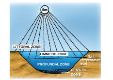
Figure 7.15: Diagrammatic sketch shows stratification of Pond ecosystem
Based on the factors like distance from the shore, penetration of light, depth of water, types of plants and animals, there may be three zones, littoral, limnetic and profundal. The littoral zone, which is closest to the shore with shallow water region, allows easy penetration of light. It is warm and occupied by rooted plant species. The limnetic zone refers the open water of the pond with an effective penetration of light and domination of planktons. The deeper region of a pond below the limnetic zone is called profundal zone with no effective light penetration and predominance of heterotrophs. The bottom zone of a pond is termed benthic and is occupied by a community of organisms called benthos OPEN BRACKET usually decomposers CLOSE BRACKET.The primary productivity through photosynthesis of littoral and limnetic zone is more due to greater penetration of light than the profundal zone.
Ecosystem services are defined as the benefits that people derive from nature. Robert Constanza et al OPEN BRACKET 1927 CLOSE BRACKET stated “Ecosystem services are the benefits provided to human, through the transformation of resources OPEN BRACKET or Environmental assets including land, water, vegetation and atmosphere CLOSE BRACKET into a flow of essential goods and services”.
Study on ecosystem services acts as an effective tool for gaining knowledge on ecosystem benefits and their sustained use. Without such knowledge gain, the fate of any ecosystem will be at stake and the benefits they provide to us in future will become bleak.
Box item
DO YOU KNOW QUESTION MARK
Robert Constanza and his colleagues estimated the value of global ecosystem services based on various parameters. According to them in 1997, the average global value of ecosystems services estimated was US $ 33 trillion a year. The updated estimate for the total global ecosystem services in 2011 is US $ 125 trillion SLASH year, indicating a four-fold increase in ecosystem services from 1997 to 2011.
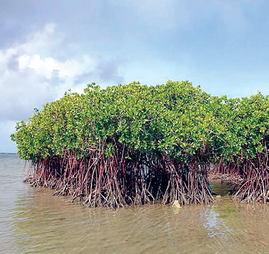
Offers habitat and act as nursery for aquatic plants and animals
Provides medicine, fuel wood and timber.
Act as bridge between sea and rivers by balancing sedimentation and soil erosion.
Help to reduce water force during cyclones, tsunamis and high tide periods.
Help in wind break, O 2 production, carbon sequestration and prevents salt spray from waves.
How do anthropogenic activities affect ecosystem services QUESTION MARK
Now, we all exploit the ecosystem more than that of our needs. The Millennium Ecosystem Assessment OPEN BRACKET 2005 CLOSE BRACKET found that “over the past 50 years, humans have changed the ecosystem more rapidly and extensively than in any comparable period of time in human history, largely to meet rapidly growing demands for food, fresh water, medicine, timber, fiber and fuel.” The varieties of benefits obtained from the ecosystem are generally categorized into the following
four types
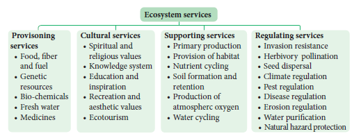
Figure 7.16: Types of Ecosystem services
Generally the following human activities disturb or re-engineer an ecosystem every day.
Habitat destruction
Deforestation and over grazing
Erosion of soils
Introduction of non-native species
Over harvesting of plant material
Pollution of land, water and air
Run off pesticides, fertilizers and animal wastes
Box item
DO YOU KNOW QUESTION MARK
Ecosystem is damaged by disturbances from fire, flood, predation, infection, drought, etc., removing a great amount of biomasss. However, ecosystem is endowed with the ability to resist the damage and recover quickly. This ability of ecosystem is called ecosystem resilience or ecosystem robustness.
It is a practice of protecting ecosystem at individual, organisational and governmental levels for the benefits of both nature and humans. Threats to ecosystems are many, like adverse human activities, global warming, pollution, etc. Hence, if we change our everyday life style, we can help to protect the planet and its ecosystem.
“If we fail to protect environment, we will fail to save posterity”.
Therefore, we have to practice the following in our day today life:
Buy and use only ecofriendly products and recycle them.
Grow more trees
Choose sustained farm products OPEN BRACKET vegetables, fruits, greens, etc. CLOSE BRACKET
Reduce the use of natural resources.
Recycle the waste and reduce the amountof waste you produce.
Reduce consumption of water and electricity.
Reduce or eliminate the use of house-hold chemicals and pesticides.
Maintain your cars and vehicles properly. OPEN BRACKET In order to reduce carbon emission CLOSE BRACKET
Create awareness and educate about ecosystem protection among your friends and family members.
Box item
DO YOU KNOW QUESTION MARK
Go green
It refers to the changing of one’s lifestyle for the safety and benefits of the environments OPEN BRACKET Reduce, Reuse, Recycle CLOSE BRACKET
Way to go green and save green
Close the tap when not in use.
Switch off the electrical gadgets when not in use.
Never use plastics and replace them with biodegradable products
Always use ecofriendly technology and products.
“USE ECOSYSTEM BUT DON’T LOSE ECOSYSTEM; MAKE IT SUSTAINABLE”
It is a process that integrates ecological, socio economic and institutional factors into a comprehensive strategy in order to sustain and enhance the quality of the ecosystem to meet current and future needs. Ecosystem management emphasis on human role in judicious use of ecosystem and for sustained benefits through minimal human impacts on ecosystems. Environmental degradation and biodiversity loss will result in depletion of natural resources, ultimately affecting the existence of human.
Box item
DO YOU KNOW QUESTION MARK
"By 2025, at least 3.5 billion people, nearly 50% of the world’s population are projected to face water scarcity." – IUCN.
"Forests house approximately 50% of global bio-diversity and at least 300 million people are dependent on forest’s goods and services to sustain their livelihood." – IUCN
It is used to maintain biodiversity of ecosystems.
It helps in indicating the damaged ecosystem OPEN BRACKET Some species indicate the health of the ecosystem: such species are called a flagship species CLOSE BRACKET.
It is used to recognize the inevitability of ecosystem change and plan accordingly.
It is one of the tools used for achieving sustainability of ecosystem through sustainable development programme OPEN BRACKET or projects CLOSE BRACKET.
It is also helpful in identifying ecosystems which are in need of rehabilitation.
It involves collaborative management with government agencies, local population, communities and NGO’s.
It is used to build the capacity of local institutions and community groups to assume responsibility for long term implementation of ecosystem management activities even after the completion of the project.
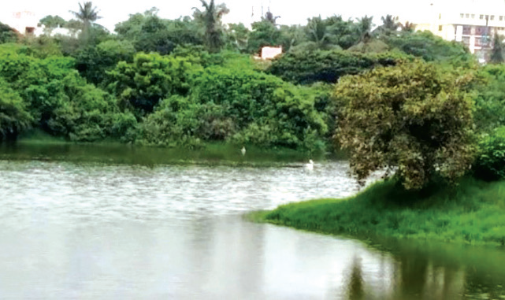
Adayar Poonga
Adayar Poonga is located in Chennai and covers an area around a total of 358 acres of Adayar creek and estuary, of which 58 acres were taken up for eco restoration under the auspices of Government of Tamil Nadu. It is maintained by Chennai Rivers Restoration Trust OPEN BRACKET CRRT CLOSE BRACKET.This was a dumping site previously. Presently it has 6 species of mangroves, about 170 species of littoral and tropical dry evergreen forests OPEN BRACKET TDF CLOSE BRACKET which have successfully established as a sustainable ecosystem. Restoration of plants species has brought other associated fauna such as butterflies, birds, reptiles, amphibians and other mammals of the ecosystem.
Currently Adayar Poonga functions as an environmental education Centre for school and college students and the public. The entire area stands as one of the best examples for urban eco restoration in the state of Tamil Nadu.
We very often see that forests and lands in our areas are drastically affected by natural calamities OPEN BRACKET Flood, earthquake CLOSE BRACKET and anthropogenic activities OPEN BRACKET Fire, over grazing, cutting of trees CLOSE BRACKET. Due to these reasons all plants of an area are destroyed and the areas become nude. When we observe this area, over a period of a time we can see that it will be gradually covered by plant community again and become fertile. Such successive replacement of one type of plant community by the other of the same areaSLASH place is known as plant succession. The first invaded plants in a barren area are called pioneers. On the other hand, a series of transitional developments of plant communities one after another in a given area are called seral communities. At the end a final stage and a final plant community gets established which are called as climax and climax community respectively.
It is a systematic process which causes changes in specific structure of plant community.
It is resultant of changes of abiotic and biotic factors.
It transforms unstable community into a stable community.
Gradual progression in species diversity, total biomass, niche specialisation, and humus content of soil takes place.
It progresses from simple food chain to complex food web.
It modifies the lower and simple life form to the higher life forms.
It creates inter-dependence of plants and animals.
The various types of succession have been classified in different ways on the basis of different aspects. These are as follows:
The development of plant community in a barren area where no community existed before is called primary succession. The plants which colonize first in a barren area is called pioneer species or primary community or primary colonies. Generally, Primary succession takes a very long time for the occurrence in any region.
Example: Microbes, Lichen, Mosses.
The development of a plant community in an area where an already developed community has been destroyed by some natural disturbance OPEN BRACKET Fire, flood, human activity CLOSE BRACKET is known as secondary succession. Generally, This succession takes less time than the time taken for primary succession.
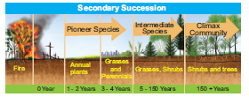
|
Primary succession |
Secondary succession |
1. |
Developing in an barren area |
Developing in disturbed area |
2. |
Initiated due to a biological or any other external factors |
Starts due to external factors only |
3. |
No soil, while primary succession starts |
It starts where soil covers is already present |
4. |
Pioneer species come from outside environment |
Pioneer species develop from existing environment |
5. |
It takes more time to complete |
It takes comparatively less time to complete |
Figure 7.17: Diagrammatic representation of secondary succession
Table 1: Differences between primary and secondary succession
Example: The forest destroyed by fire and excessive lumbering may be re-occupied by herbs over a period of times.
Allogeneic succession occurs as a result of abiotic factors. The replacement of existing community is caused by other external factors OPEN BRACKET soil erosion, leaching, etc., CLOSE BRACKET and not by existing organisms.
Example: In a forest ecosystem soil erosion and leaching alter the nutrient value of the soil leading to the change of vegetation in that area.
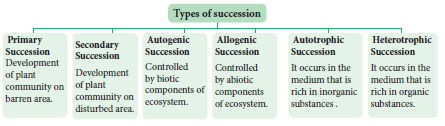
Figure 7.18: Types of succession
Detailed study of Hydrosere and Lithosere are discussed below:
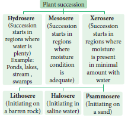
Figure 7.19: Classification of plant successionHydrosere
The succession in a freshwater ecosystem is also referred to as hydrosere. Succession in a pond, begins with colonization of the pioneers like phytoplankton and finally ends with the formation of climax community like forest stage. It includes the followi
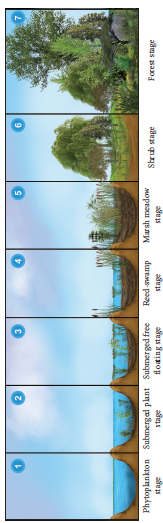
ng stages Fig 7.20.
Figure 7.20: Diagrammatic representation shows different stages of hydrosere.
1. Phytoplankton stage - It is the first stage of succession consisting of the pioneer community like blue green algae, green algae, diatoms, bacteria, etc., The colonization of these organisms enrich the amount of organic matter and nutrients of pond due to their life activities and death. This favors the development of the next seral stages.
2. Submerged plant stage - As the result of death and decomposition of planktons, silt brought from land by rain water, lead to a loose mud formation at the bottom of the pond. Hence, the rooted submerged hydrophytes begin to appear on the new substratum. Example: Chara, Utricularia, Vallisneria and Hydrilla etc. The death and decay of these plants will build up the substratum of pond to become shallow. Therefore, this habitat now replaces another group of plants which are of floating type.
3. Submerged free floating stage – During this stage, the depth of the pond will become almost
2 to 5 feet. Hence, the rooted hydrophytic plants and with floating large leaves start colonising the pond. Example: Rooted floating plants like Nelumbo, Nymphaea and Trapa. Some free floating species like Azolla, Lemna, Wolffia and Pistia are also present in this stage. By death and decomposition of these plants, further the pond becomes more shallow. Due to this reason, floating plant species is gradually replaced by another species which makes new seral stage.
4. Reed-swamp stage - It is also called an amphibious stage. During this stage, rooted floating plants are replaced by plants which can live successfully in aquatic as well as aerial environment. Example: Typha, Phragmites, Sagittaria and Scirpus etc. At the end of this stage, water level is very much reduced, making it unsuitable for the continuous growth of amphibious plants.
5. Marsh meadow stage - When the pond becomes swallowed due to decreasing water level, species of Cyperaceae and Poaceae such as Carex, Juncus, Cyperus and Eleocharis colonise the area. They form a mat-like vegetation with the help of their much branched root system. This leads to an absorption and loss of large quantity of water. At the end of this stage, the soil becomes dry and the marshy vegetation disappears gradually and leads to shurb stage.
6. Shrub stage - As the disappearance of marshy vegetation continues, soil becomes dry. Hence,
these areas are now invaded by terrestrial plants like shrubs OPEN BRACKET Salix and Cornus CLOSE BRACKET and trees OPEN BRACKET Populus and Alnus CLOSE BRACKET. These plants absorb large quantity of water and make the habitat dry. Further, the accumulation of humus with a rich flora of microorganisms produce minerals in the soil, ultimately favouring the arrival of new tree species in the area.
7. Forest stage - It is the climax community of hydrosere. A variety of trees invade the area and develop any one of the diverse type of vegetation. Example:Temperate mixed forest OPEN BRACKET Ulmus,Acer
and Quercus CLOSE BRACKET, Tropical rain forest OPEN BRACKET Artocarpus and Cinnamomum CLOSE BRACKET and Tropical deciduous forest OPEN BRACKET Bamboo and Tectona CLOSE BRACKET.
In the 7 stages of hydrosere succession, stage1 is occupied by pioneer community, while the stage 7 is occupied by the climax community. The stages 2 to 6 are occupied by seral communities.
Succession is a dynamic process. Hence an ecologist can access and study the seral stages of a plant community found in a particular area.
The knowledge of ecological succession helps to understand the controlled growth of one or more species in a forest.
Utilizing the knowledge of succession, even dams can be protected by preventing siltation.
It gives information about the techniques to be used during reforestation and afforestation.
It helps in the maintenance of pastures.
Plant succession helps to maintain species diversity in an ecosystem.
Patterns of diversity during succession are influenced by resource availability and disturbance by various factors.
Primary succession involves the colonization of habitat of an area devoid of life.
Secondary succession involves the reestablishment of a plant community in disturbed area or habitat.
Forests and vegetation that we come across all over the world are the result of plant succession.
The interaction between biotic and abiotic components in an environment is called ecosystem. Autotrophs and heterotrophs are the producers and consumers respectively. The function of ecosystem refers to creation of energy, flow of energy and cycling of nutrients. The amount of light available for photosynthesis is called Photo synthetically Active Radiation It is essential for increase in the productivity of ecosystem. The rate of biomass production per unit area SLASHtime is called productivity. It is classified as primary productivity, secondary productivity and community productivity. The transfer of energy in an ecosystem can be termed as energy flow. It is explained through the food chain, food web, ecological pyramids OPEN BRACKET pyramid of number, biomass and energy CLOSE BRACKET and biogeochemical cycle. Cycling of nutrients between abiotic and biotic components is evident in the pond ecosystem, making itself self sufficient and self regulating Ecosystem protected for the welfare of posterity is called ecosystem management.
Successive replacement of one type of plant community by the other of the same areaSLASH place is known as plant succession. The first invaded plants in a barren OPEN BRACKET nude CLOSE BRACKET area are called pioneers OPEN BRACKET pioneers communities CLOSE BRACKET. On the other hand, a series of transitional developments of plant communities one after another in a given area are called seral communities. Succession is classified as primary succession,secondary succession, allogeneic succession and autotrophic succession. Plant succession is classified in to hydrosere OPEN BRACKET Initiating on a water bodies CLOSE BRACKET, Mesosere and xerosere. Further xerosere is subdivided in to Lithosere OPEN BRACKET Initiating on a barren rock CLOSE BRACKET, Halosere and Pasmmosere
Evaluation
1. Choose the most suitable answer from the given four alternatives and write the option code and the corresponding answer.
1. Which of the following is not a abiotic component of the ecosystem QUESTION MARK
a CLOSE BRACKET Bacteria
b CLOSE BRACKET Humus
c CLOSE BRACKET Organic compounds
d CLOSE BRACKET Inorganic compounds
2. Which of the following is SLASH are not a natural ecosystem QUESTION MARK
a CLOSE BRACKET Forest ecosystem
b CLOSE BRACKET Rice field
c CLOSE BRACKET Grassland ecosystem
d CLOSE BRACKET Desert ecosystem
3. Pond is a type of
a CLOSE BRACKET forest ecosystem
b CLOSE BRACKET grassland ecosystem
c CLOSE BRACKET marine ecosystem
d CLOSE BRACKET fresh water ecosystem
4. Pond ecosystem is
a CLOSE BRACKET not self sufficient and self regulating
b CLOSE BRACKET partially self sufficient and self regulating
c CLOSE BRACKET self sufficient and not self regulating
d CLOSE BRACKET self sufficient and self regulating
5. Profundal zone is predominated by heterotrophs in a pond ecosystem, because of
a CLOSE BRACKET with effective light penetration
b CLOSE BRACKET no effective light penetration
c CLOSE BRACKET complete absence of light
d CLOSE BRACKET a and b
6. Solar energy used by green plants for photosynthesis is only
a CLOSE BRACKET 2 to 8 percentage
b CLOSE BRACKET 2 to 10 percentage
c CLOSE BRACKET 3 to 10 percentage
d CLOSE BRACKET 2 to 9 percentage
7. Which of the following ecosystem has the highest primary productivity QUESTION MARK
a CLOSE BRACKET Pond ecosystem
b CLOSE BRACKET Lake ecosystem
c CLOSE BRACKET Grassland ecosystem
d CLOSE BRACKET Forest ecosystem
8. Ecosystem consists of
a CLOSE BRACKET decomposers
b CLOSE BRACKET producers
c CLOSE BRACKET consumers
d CLOSE BRACKET all of the above
9. Which one is in descending order of a food chain
a CLOSE BRACKET Producers linked to Secondary consumers linked to Primary consumers linked to Tertiary consumers
b CLOSE BRACKET Tertiary consumers linked to Primary consumers linked to Secondary consumers linked to Producers
c CLOSE BRACKET Tertiary consumers linked to Secondary consumers linked to Primary consumers linked to Producers
d CLOSE BRACKET Tertiary consumers linked to Producers linked to Primary consumers linked to Secondaryconsumers
10. Significance of food web is SLASH are
a CLOSE BRACKET it does not maintain stability in nature
b CLOSE BRACKET it shows patterns of energy transfer
c CLOSE BRACKET it explains species interaction
d CLOSE BRACKET b and c
11. The following diagram represents
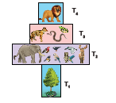
a CLOSE BRACKET pyramid of number in a grassland ecosystem
b CLOSE BRACKET pyramid of number in a pond ecosystem
c CLOSE BRACKET pyramid of number in a forest ecosystem
d CLOSE BRACKET pyramid of biomass in a pond ecosystem
12. Which of the following is SLASH are not the mechanism of decomposition
a CLOSE BRACKET Eluviation
b CLOSE BRACKET Catabolism
c CLOSE BRACKET Anabolism
d CLOSE BRACKET Fragmentation
13. Which of the following is not a sedimentary cycle
a CLOSE BRACKET Nitrogen cycle
b CLOSE BRACKET Phosphorous cycle
c CLOSE BRACKET Sulphur cycle d CLOSE BRACKET Calcium cycle
14. Which of the following are not regulating services of ecosystem services
1 CLOSE BRACKET Genetic resources
2 CLOSE BRACKET Recreation and aesthetic values
3 CLOSE BRACKET Invasion resistance
4 CLOSE BRACKET Climatic regulation
a CLOSE BRACKET 1 and 3
b CLOSE BRACKET 2 and 4
c CLOSE BRACKET 1 and 2
d CLOSE BRACKET 1 and 4
15. Productivity of profundal zone will be low. Why QUESTION MARK
16. Discuss the gross primary productivity is more efficient than net primary productivity.
17. Pyramid of energy is always upright. Give reasons
18. What will happen if all producers are removed from ecosystem QUESTION MARK
19. Construct the food chain with the following data. Hawk, plants, frog, snake, grasshopper.
20. Name of the food chain which is generally present in all type of ecosystem. Explain and write their significance.
21. Shape of pyramid in a particular ecosystem is always different in shape. Explain with example.
22. Generally human activities are against to the ecosystem, where as you a student how will you help to protect ecosystem QUESTION MARK
23. Generally in summer the forest are affected by natural fire. Over a period of time it recovers itself by the process of successions . Find out the types of succession and explain.
24. Draw a pyramid from following details and explain in brief. Quantities of organisms are given-Hawks-50, plants-1000.rabbit and mouse-250 plus 250, pythons and lizard- 100 plus 50 respectively.
25. Various stages of succession are given bellow. From that rearrange them accordingly. Find
out the type of succession and explain in detail.
Reed-swamp stage, phytoplankton stage, shrub stage, submerged plant stage, forest stage, submerged free floating stage, marsh medow stage.
Ecosystem:
Study of interaction between living and non-living components
Standing quality:
Total inorganic substances presents in any ecosystem at a given time and given area
Standing crops:
Amount of living material present in a population at any time.
Biomass:
Can be measured as fresh weight or dry weight of organisms
Benthic:
Bottom zone of the pond
Trophic:
Refers to the position of organisms in food chain
Omnivores:
Those eats both plants and animals
Food chain:
Refers movement of energy from producers up to top carnivores
Food web:
Interlocking pattern of food chain
Pyramid of number:
Refers number of organisms in a successive trophic level
Pyramid of biomass:
Refers to quantitative relationship of the standing crops
Pyramid of energy:
Refers transformation of energy at successive trophic levels
Ten per cent law:
refers only 10 per cent of energy is stored in each successive trophic levels
Bio geo chemical cycle:
Exchange of nutrients between organisms and environments
Carbon cycle:
Circulation of carbon among organisms and environments
Guano:
It is a accumulated excrement of sea birds and bats.
Phosphorus cycle:
Circulation of Phosphorus among organisms and environments
Succession:
Successive replacement of one type of plant communities by other on barren or disturbed area.
Pioneers:
Invaded plants on barren area
Primary succession:
Plants colonising on, barren area
Secondary succession:
Plants colonising ondisturbed area.
Climax communities:
Final establishment of plant communities which are not replaced by others.
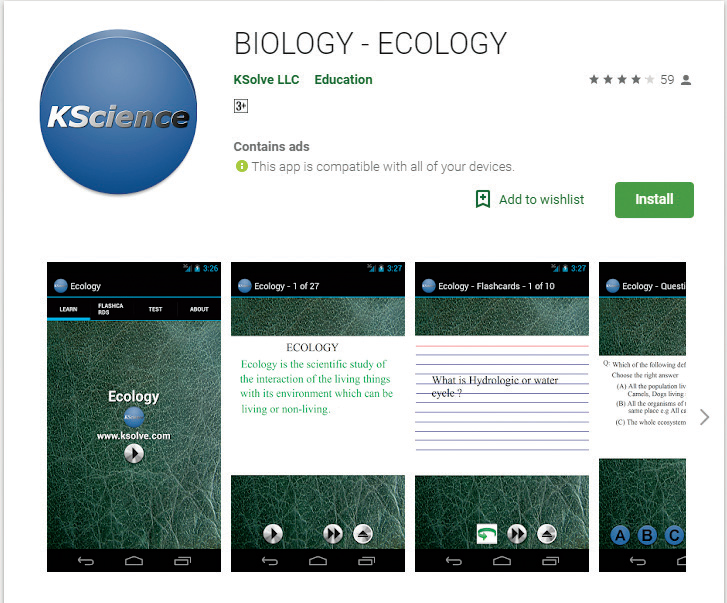
Let us know about the Ecosystem in detail through this activity.
Steps
Type the URL or scan the QR code to open the activity page then Introduction page will open.
Click on the Learn icon in the introduction page to know in detail.
Click on the Flashcards icon in the introduction page to know about the topics easily.
Click on the Test icon to write a quiz test finally it displays the marks we scored.
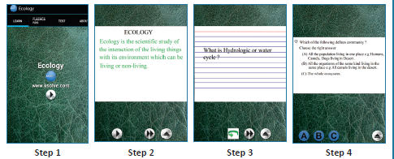
URL: https:SLASHSLASHplay.google.comSLASHstoreSLASHappsSLASHdetails QUESTION MARKid=com.ksolve. ecologyfree
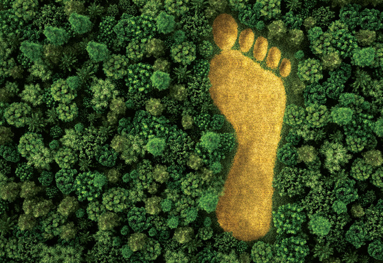
The learner will be able to,
Understand the importance of growing more plants to mitigate the environmental problems.
Distinguish between the importance and conservation of endemic and endangered species.
Appreciate the use of technologies for agriculture and forestry.
Participate in community activities to improve environmental conditions.
Develop methods in conservation of water and plants for sustainable development.
Get acquainted with satellite technology and utilising it in our daily life needs.